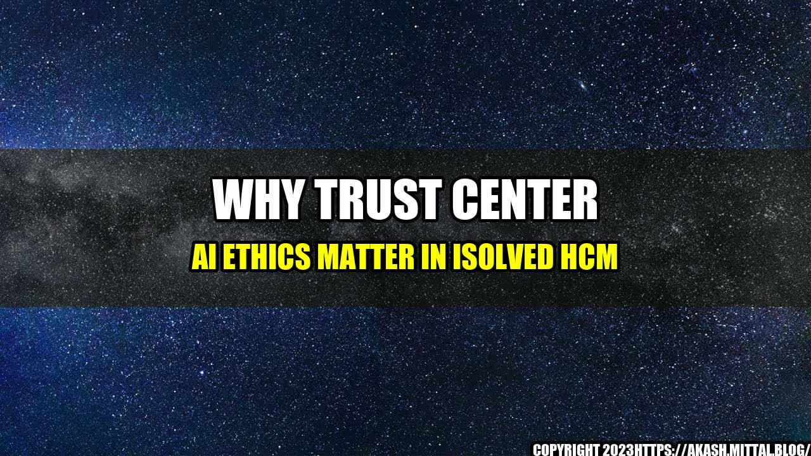

 Mary sat at her desk, staring at a spreadsheet filled with employee data. As the HR manager for a mid-sized company, it was her job to use this information to make decisions about promotions, compensation, and more. But sometimes, the data didn't paint the full picture. She knew that some employees faced challenges in their personal lives that affected their work, but that information wasn't captured in the spreadsheet. That's when Mary decided to explore the use of AI in HR. She wondered if algorithms could help her make more informed decisions based on a wider range of factors. But as she researched the topic, she became more and more aware of the ethical considerations involved. She realized that if she wasn't careful, AI could perpetuate biases, reinforce discrimination, and violate employees' privacy. That's why Mary was relieved to discover that her company, iSolved HCM, had a robust Trust Center AI Ethics Statement in place. With this framework, she felt confident that she could navigate the complex landscape of AI in a responsible and ethical way.
Why Trust Center AI Ethics Matter in iSolved HCM
AI is increasingly being used in all areas of business, including HR. From resume screening to performance evaluations to predictive modeling, AI tools can help companies make decisions faster, more accurately and more efficiently. But with any new technology, there are risks involved. Without proper oversight and regulation, AI can cause unintended harm. That's why Trust Center AI Ethics matter in iSolved HCM. As a company that provides HR and payroll software solutions for businesses of all sizes, iSolved HCM is committed to ensuring that AI is used in a transparent, fair, and ethical way. The Trust Center AI Ethics Statement outlines a commitment to five key principles: Transparency, Fairness, Privacy, Security, and Accountability. These principles guide the development and deployment of AI tools within the iSolved HCM platform and serve as a foundation for responsible and ethical AI usage. Let's take a closer look at each of these principles and why they matter:
Transparency
Transparency is essential in AI development and deployment. It means that companies must be clear and open about how their AI systems work, what data they use, and how they make decisions. Without transparency, employees and customers can't understand or contest the decisions that AI systems make. For example, using a predictive model to assess an employee's future performance might seem like a good idea. But if the model is based on flawed assumptions or biased data, it could unfairly penalize certain employees. By being transparent about what factors the model considers, how the model was trained, and what assumptions it makes, iSolved HCM ensures that their AI models are fair and just.
Fairness
Fairness is another essential principle of AI ethics. It means that AI systems must not discriminate against any group or individual based on factors such as race, age, gender, or any other protected characteristics. If an AI model is trained on biased data, it can perpetuate that bias and reinforce discrimination. For example, imagine a company that uses an AI tool to screen job applicants. If the tool is trained on data biased against women, it may unfairly reject qualified female candidates. By using unbiased data and monitoring for bias in their AI models, iSolved HCM ensures that their systems are fair and inclusive.
Privacy
Privacy is a fundamental right that is increasingly threatened in the age of big data and AI. The vast amounts of data collected by AI systems can reveal sensitive information about individuals that they may not want to share. Companies can't use AI to collect or use personal information without first obtaining informed consent and ensuring that they follow proper data privacy laws and regulations. For example, iSolved HCM maintains strict data privacy policies to ensure that employee data is secure and confidential. They make sure that employee data is only used for the purposes for which it was collected and only accessed by authorized personnel. They also make it easy for customers to opt-out of having their data collected or used for AI purposes.
Security
Security is another essential aspect of AI ethics. AI systems are only as good as the data they use, and if that data is inaccurate or compromised, it can lead to serious consequences. Companies must take measures to ensure that their AI systems are secure and resistant to hacking or other cyberattacks. For example, iSolved HCM uses state-of-the-art security measures to protect customer data. They regularly review and update their security protocols to ensure that sensitive information is safeguarded against theft or unauthorized access.
Accountability
Finally, accountability is crucial in AI ethics. If something goes wrong with an AI system, whether through a programming error, a biased algorithm, or a data breach, the company responsible for the system must take responsibility for it. Companies must be accountable for the impact their AI systems have on employees, customers, and society as a whole. For example, iSolved HCM regularly monitors and tests their AI systems to ensure that they are working as intended and are not causing any unintended harm. They also have policies and procedures in place for addressing any issues that arise and are committed to continuous improvement in their AI practices.
Conclusion
AI is a powerful tool that can help companies make better decisions faster. But with that power comes great responsibility. Companies like iSolved HCM recognize the risks involved in using AI and are committed to ensuring that it is used in a responsible and ethical way. The Trust Center AI Ethics Statement provides a framework for transparent, fair, private, secure, and accountable AI usage, ensuring that employees, employers, and customers can benefit from AI's advantages without fear of unintended consequences. To ensure the continued improvement of AI in HR, companies need to follow ethical and transparent practices. With the Trust Center AI Ethics in place, iSolved HCM leads by example, promoting responsible and ethical AI usage.
Curated by Team Akash.Mittal.Blog
Share on Twitter Share on LinkedIn